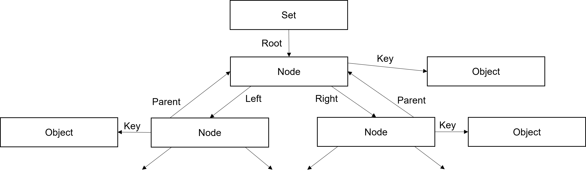

This document describes the design of the Asp scripting platform. The engine, compiler, and application specification generator are all described.
The Asp scripting platform consists of a script compiler, an application specification generator (used to describe functions with the application that scripts can call), and a script execution engine, provided as a library.
To save space, variable names in scripts are converted to numbers. This includes function names, both those defined in scripts, and those defined in the application.
To ensure proper execution, a compatibility check between compiled code and the engine's version and application specification is made prior to running a script. If an error is encounter during the loading of a script, the likely remedy is to recompile the script using the appropriate compiler and application specification file.
All components of the platform are built using the CMake utility.
The implementation of the engine library resides in the engine directory of the source repository.
In the sections that follow, the topics discussed start with low-level concepts, and then move onto higher level design elements. Data entries, the specific way that data memory is organized, is the first topic. Then, engine initialization is discussed, followed by a detailed treatment of the various instructions supported by the engine. To wrap up, the application programmer's interface (API) is covered.
The engine definition is split between two headers: asp.h (public) and asp-priv.h (private). Application programmers can use declarations in the asp.h header. Any declaration found in asp-priv.h should be considered off limits to application code.
The Engine structure, which defines all things concerning an
engine instance, is defined in the private
asp-priv.h header, and includes:
None, False,
and True),
sys),
againfeature of application function calls (the
againflag, current application function symbol, application function namespace, and application function return value).
The engine is implemented entirely in C and is built as a library which is linked into an application to support script execution.
Data memory is divided up into fixed-sized slots called data entries. Each
entry occupies 16 bytes and can hold four 28‑bit words, an integer or
floating-point value, or for string fragment entries, up to 14 characters
of string data. Other arrangements are used for special data types,
particularly application objects. The type of each entry, T,
determines the layout used. The structure definition produces a different
layout of the 28‑bit words depending on whether the target machine is
big-endian or little-endian. It looks like this.
| Byte address: | 0 | 1 | 2 | 3 | 4 | 5 | 6 | 7 | 8 | 9 | 10 | 11 | 12 | 13 | 14 | 15 | ||||||||||||||||
| BE Word Layout: | B |
Word0
|
Word1
|
H |
Word2[0-23]UC
|
Word3[0-23]
|
T
|
|||||||||||||||||||||||||
| LE Word Layout: |
Word0[0-23]
|
B |
X |
Word1[0-23]
|
Y |
Word2[0-23]UC
|
H |
Z |
Word3[0-23]
|
T |
||||||||||||||||||||||
| Integer Entry: | Integer | T |
||||||||||||||||||||||||||||||
| Float Entry: | Double-precision float | T |
||||||||||||||||||||||||||||||
| String Fragment: |
C
|
S0
|
S1
|
S2
|
S3
|
S4
|
S5
|
S6
|
S7
|
S8
|
S9
|
S10
|
S11
|
S12
|
S13
|
T
|
||||||||||||||||
| App Object (32‑bit): |
FP
|
I / P
|
H6
|
T |
||||||||||||||||||||||||||||
| App Object (64‑bit): |
FP
|
T |
||||||||||||||||||||||||||||||
| App Integer Object Info (64‑bit): |
I
|
H6
|
T |
|||||||||||||||||||||||||||||
| App Pointer Object Info (64‑bit): |
P
|
H6
|
T |
|||||||||||||||||||||||||||||
The 28‑bit words are used for code and data addresses. Code
addresses are byte addresses, whereas data addresses refer to the index of
a data entry. Regardless of the machine's byte-order, accessing words 0,
1, and 2 is straightforward; only the high-order 4 bits of a 32‑bit
value need to be avoided. In the diagram, X represents bits
24–27 of word 0. Likewise, Y belongs to word 1 and
Z belongs to word 2. Accessing word 3 requires combining the
lower 24 bits in bytes 12–14 with the high-order nibble,
H, in byte 8 or 11, depending on the byte-order.
The 4‑bit B field is used for single-bit flags. No more
than 4 flags per entry have been defined at this time. If more are needed,
there are another 4 spare bits available in the high-order nibble of byte
4 (big-endian) or 7 (little-endian) (i.e., the high-order 4 bits of the
word in bytes 4–7).
Integer entries hold a single 32‑bit signed integer, and float
entries hold a double-precision (64‑bit) floating-point value,
typically IEEE 754 binary64
format. String fragments hold up to 14
bytes of character data in S0, S1, …,
S13. The actual number of bytes used is stored in the
1‑byte count field, C. String data in Asp are not
null-terminated. A type entry stores a type value in the count field.
Application objects take one or two entries, depending on the platform.
On 32‑bit platforms, a single entry contains a function pointer
(FP) that points to an object destruction function, a
32‑bit signed integer (I) or object pointer
(P), depending on the type of the application object, and
a signed 16‑bit application object type identifier in the
H6 field. On 64‑bit platforms, these fields are spread
over two entries due to the size of the pointer fields. In this case, the
primary entry uses word 3 to refer to the secondary entry.
A data entry can represent either an object or an internal entry. Objects
are the entries that scripts can refer to directly, whereas internal
entries are used by the engine to implement internal structures. The main
difference to the layout is that objects have a use count,
UC, which is stored in word 2. (More on use counts below.) An
object's type, T, is limited to the range 0–0x3F, or 7
bits. Here are the object types.
| Type name | Type value | Fields used | |||||||||||
|---|---|---|---|---|---|---|---|---|---|---|---|---|---|
Flags (B) |
Word0 |
Word1 |
Word2 (UC) |
Word3 |
Integer | Float | Count (C) |
String (S*) |
Callback (CB) |
Integer Value (I) |
Value Pointer (P) |
||
| None | 0x00 | ✓ | |||||||||||
| Ellipsis | 0x01 | ✓ | |||||||||||
| Boolean | 0x02 | 1 | ✓ | ||||||||||
| Integer | 0x03 | ✓ | ✓ | ||||||||||
| Float | 0x04 | ✓ | ✓ | ||||||||||
| Range | 0x07 | 3 | ✓ | ✓ | ✓ | ✓ | |||||||
| String | 0x08 | ✓ | ✓ | ✓ | ✓ | ||||||||
| Tuple | 0x09 | ✓ | ✓ | ✓ | ✓ | ||||||||
| List | 0x0A | ✓ | ✓ | ✓ | ✓ | ||||||||
| Set | 0x0B | ✓ | ✓ | ✓ | |||||||||
| Dictionary | 0x0D | ✓ | ✓ | ✓ | |||||||||
| Iterator | 0x0E | 1 | ✓ | ✓ | ✓ | ||||||||
| Function | 0x0F | 1 | ✓ | ✓ | ✓ | ✓ | |||||||
| Module | 0x10 | 1 | ✓ | ✓ | ✓ | ||||||||
| App Object (32‑bit) |
0x1A, 0x1B | ✓ | ✓ | ✓ | ✓ | ||||||||
| App Object (64‑bit) | ✓ | ✓ | ✓ | ||||||||||
| Type | 0x1F | ✓ | ✓ | ||||||||||
Internal types are used to support data structures. For example, the main entry for a list is represented by the List type (an object), but words 0 and 1 of this entry point to the head and tail Elements entries of the list (internal entries), respectively. Internal types do not have a use count, so word 2 is free to be used for other purposes. An internal entries' type must be 0x20 or greater. Here are the internal types.
| Type name | Type value | Fields used | |||||||||||
|---|---|---|---|---|---|---|---|---|---|---|---|---|---|
Flags (B) |
Word0 |
Word1 |
Word2 |
Word3 |
Integer | Float | Count (C) |
String (S*) |
Callback (CB) |
Integer Value (I) |
Value Pointer (P) |
Code Address | 0x40 | ✓ |
| Stack Entry | 0x50 | 2 | ✓ | ✓ | ✓ | ||||||||
| Frame | 0x52 | ✓ | ✓ | ✓ | |||||||||
| Element | 0x62 | ✓ | ✓ | ✓ | |||||||||
| String Fragment | 0x64 | ✓ | ✓ | ||||||||||
| Key/Value Pair | 0x66 | ✓ | ✓ | ||||||||||
| Namespace | 0x70 | 3 | ✓ | ✓ | |||||||||
| Set Node | 0x74 | 1 | ✓ | ✓ | ✓ | ✓ | |||||||
| Dictionary Node | 0x78 | 1 | ✓ | ✓ | ✓ | ✓ | |||||||
| Namespace Node | 0x7C | 1 | ✓ | ✓ | ✓ | ✓ | |||||||
| Tree Links Node | 0x7D | ✓ | ✓ | ||||||||||
| Parameter | 0x80 | 2 | ✓ | ✓ | |||||||||
| Parameter List | 0x81 | ✓ | ✓ | ✓ | |||||||||
| Argument | 0x82 | 2 | ✓ | ✓ | |||||||||
| Argument List | 0x83 | ✓ | ✓ | ✓ | |||||||||
| App Object Info (64‑bit) |
0xAA, 0xAB
|
✓ | ✓ | ||||||||||
| Free Entry | 0xFF | ✓ | |||||||||||
The data.h header defines several macros for accessing the various fields within each type of data entry. These macros use bit extraction definitions which can be found in bits.h. The following sections describe some of the more complex data entries in more detail. Others are covered in subsequent sections.
As mentioned above, objects have a reference count, which is always stored
in word 2 of the data entry. When an object is created, the count is set
to 1. The AspRef and AspUnref routines
(ref.c) are used to increment and decrement the use
count, respectively. When an object's use count drops to zero, the entry
is freed, changing its type to Free Entry and adding it to the free list.
For application objects, their destructor functions is called prior to freeing the entry. The object's type and value (integer or pointer) is passed to the destructor so that the application can locate and deal with its destruction.
Freeing an entry implies decrementing the use count for any referenced object entries. So, un-referencing an object is a recursively defined operation. However, use of recursion in the implementation of the Asp engine is avoided by employing an iterative approach, which uses the data entry stack. See the section on recursion avoidance for details.
Because all None objects look alike, there is no need to
store more than one of them. Therefore, the engine reserves the first data
entry as a None entry. Any time a None object is
created
, the use count of the None singleton entry is
simply incremented, and the index of its entry is used to refer to it.
Since None objects are used in many situations, this can save
on data memory utilization.
The same logic applies to False and True
objects, but in these cases, the engine does not allocate singletons for
them during initialization. Instead, the first time a False
object is created
, if no False singleton (a Boolean
entry) exists, it is allocated, and its reference is stored in the engine
structure. Subsequent new False objects use the same
reference, incrementing its use count. If the last False
object is destroyed
, the entry is reclaimed to the free list. The
same rules apply to True objects as well.
The Asp engine uses a run-time stack in much the same way that real machines do.
Stack support routines are defined in stack.c, and
include AspPush, AspTopValue, and
AspPop. Pushing an item onto the stack increases its use
count (if it is an object); popping an item decrements it, potentially
causing the item to be freed. Accessing the top item via
AspTopValue does not increase the use count; the caller is
responsible for doing so if needed.
The Stack Entry contains the address of the previous entry in the stack in word 0 (which is zero for the bottom entry). A pointer in the engine structure points to the top entry (null if the stack is empty). The Stack Entry also contains the address of the value in word 1, which may be an object or an internal type.
Additional routines are available to assist the logic of recursion
avoidance. These routines (AspPushNoPush and
AspPopNoErase) do not touch the use count. Some of the
recursion avoidance implementations make use of a second value referenced
by the Stack Entry (word 2) and some flags (not shown in the diagram). See
the section on recursion avoidance for
more details.
A range consists of three integer values: start, end, and step. There is not enough space in a data entry to store 3 32‑bit integers, so the range entry points to 3 other data entries (of integer type) where the actual values are kept.
The index of the start entry is stored in word 0, end is in word 1, and step is in word 3. The use count is in word 2, as it is with all object entries. This arrangement takes up a lot of data memory (4 entries). To alleviate the situation, default values for each of the integer values can be indicated with a bit for each in the range entry. When the applicable bit is set, the associated integer value is not needed, and the index value for it is set to zero (but otherwise ignored).
Sequences include tuples, lists, and strings, and are all implemented in a similar fashion using doubly linked lists. Most of the implementation for sequences is in sequence.c.
In the above diagram, Sequence
stands for one of String, Tuple,
List, Parameter List, or Argument List. This entry contains the element
count (or for strings, the string's character count) in word 3 and the
addresses of the head and tail elements in words 0 and 1. The Element
entry contains the address of a value in word 2 and the addresses of the
next and previous elements in words 0 and 1. The Item
type depends
on the sequence type. For Tuple and List sequences, it is an object of any
type. On the other hand, Strings contain String Fragments, Parameter Lists
contain Parameters, and Argument Lists contain Arguments.
In the case of String Fragments, the entry directly stores up to 14 bytes of string data, plus a single-byte count of the number of bytes in the fragment.
Parameters contain the parameter's symbol in word 0. A bit flag indicates
whether the parameter has a default value, and if so, its index is in word
1. There is also a bit flag that indicates whether the parameter is a
group (e.g. *args).
Arguments contain an index to the value in word 1. If the argument is named, this is indicated by a bit flag and the symbol of the name is in word 0. Like Parameters, another bit flag is used to indicate whether the argument is a tuple group.
Many of the sequence routines make use of a AspListResult
structure type. This structure contains an AspRunResult plus
two data entry pointers, one for the element and the other for the value.
Iterators are used to traverse sequences (among other things). See the section on iterators for details. When freeing a sequence (due to un-referencing to a use count of zero), the un-reference logic traverses the sequence, freeing all the Element entries, and decrementing the use count of any object, or freeing non-object items. Of course, this means that if an object's use count is reduced to zero, it must also be freed, leading to a recursive definition. See the section on recursion avoidance for an explanation of how sequences are un-referenced without the use of recursion.
Sets, dictionaries and namespaces are implemented using red-black trees (not hash tables as in Python). The implementation resides in tree.c. The red-black balancing logic is based upon the algorithms described in Introduction to Algorithms by Thomas H. Cormen, et al., 3rd edition.
The top-level data entry that represents the entire tree contains a count of the number of keys in word 0, and the index of the root node in word 1. The tree structure for sets is simpler than that of dictionaries and namespaces since it contains only keys.
For sets, nodes contain an index of the parent node in word 1, and indices of the left and right child nodes in words 2 and 3. The index of the key object is stored in word 0.
Because each data entry can only store up to four 28‑bit words, and because dictionaries and namespaces have both keys and values, a slightly more complex arrangement is needed.
For dictionaries, the node contains indices to the key in word 0, and to the value in word 3. The index to the parent node is in word 1. An additional Links entry, whose index is stored in word 2 of the node, carries the indices of the left and right child nodes in words 1 and 2.
A namespace is nearly identical in arrangement to the dictionary. The only difference is that instead of storing the index of a key object, a symbol value is stored in word 0 instead.
Many of the tree routines make use of a AspTreeResult
structure type. This structure contains an AspRunResult plus
three data entry pointers, one for the node, and the other two for the key
and value (if applicable).
Iterators are used to traverse trees (among other things). See the section on iterators for details. When freeing a tree (due to un-referencing to a use count of zero), the un-reference logic traverses the tree, freeing all the Node and Link entries, and decrementing the use count of any key or value objects. Of course, this means that if an object's use count is reduced to zero, it must also be freed, leading to a recursive definition. See the section on recursion avoidance for an explanation of how trees are un-referenced without the use of recursion.
Iterators are used to traverse through a range of values defined by one of the following items: range, sequence (including a string), set, or dictionary*. This object is referred to as the iterable, and an index to it is stored in word 0 of the Iterator entry. The value stored in word 1 depends on the iterable; each type is explained below.
For sequence iterators, word 1 is an index to the Element entry, making it possible to access the value (to dereference the iterator) and the next element (for advancing the iterator).
For iterators that refer to a tree structure, the arrangement is similar. Word 1 is an index of the Node entry in this case.
String iterators are a special case of sequence iterators. Word 1 is still
an index to the Element entry, but there is an additional 8‑bit
field (S11, within word 3) used to keep track of the current
character within the current String Fragment entry.
Finally, range iterators require the creation of an integer to maintain the current value. An index to this integer is stored in word 1 as expected, but because the integer is considered part of the iterator (not part of the iterable), it must be cleaned up when the iterator is freed. Therefore, a bit flag is set to indicate the need for cleanup. The integer is cleaned up either when the iterator is advanced to the end of the range, or in the un-reference logic if the iterator is dropped before that happens.
* Namespaces are not listed here only because they are not objects. If, in a future version of Asp, namespaces become objects, iteration would be supported since it is generic to all tree structures.
A function definition is stored in a Function entry. A bit flag is used to distinguish between script-defined functions and application functions. For script-defined functions, word 0 contains the code address (a byte offset into the code block). For application functions, word 0 contains the symbol of the function and is used in the application function dispatch logic to find the correct C function to call. An index to the function's Parameter List entry is stored in word 3.
Each function belongs to a module, either the script module in which it
was defined, or the sys module for application functions. An
index to the Module entry is stored in word 1.
Each module is represented by a Module entry, including the
sys module. For script modules, the code entry point is
stored in word 0. A bit flag indicates whether the module has been loaded
(i.e., executed as the result of an import statement). Word 1
contains an index of the Namespace entry where the module's global
variables are stored.
Variables local to a function require the use of a Frame entry, which is created and pushed onto the run-time stack during the process of a function call. The Frame entry contains an index to the local Namespace entry in word 2, and an index of the applicable Module entry in word 1 (for global variables). Word 0 contains the return address, an index into the code block.
There are several algorithms that are part of Asp's engine implementation that are defined recursively. To avoid recursion (so as not to use an undefined amount of the application's run-time stack), the Asp engine's run-time stack is used instead, and the algorithm is converted into iteration. If, during an iteration, the stack grows to consume all the engine's data memory, an error is flagged, and the script aborts, but no ill affects to the application's run-time stack are incurred. This logic applies to un-referencing objects, object comparison, checking objects for suitability as keys, sequence assignment, and conversion of objects into strings.
The general implementation approach is as follows. First, the pointer to
the top of the engine's stack is stored in a local variable, which we will
refer to as the starting stack position. Then a loop processes the item(s)
of interest, pushing any work that must be deferred onto the stack using
the AspPushNoUse routine (so that use counts are not
affected). In some cases, use of the secondary value of a stack entry is
also used. At the end of the loop iteration, a check is made to determine
whether the current stack pointer is the same as the saved starting
position (or if an error has occurred) upon which the loop is exited. In
the case that no error has occurred, but the stack pointer has not
returned to its starting position, the applicable values are popped off
the stack using AspPopNoErase, and the loop is iterated once
more. Each algorithm mentioned above has slight variations on this theme,
as detailed below.
First, let's tackle un-referencing objects, implemented in ref.c. During each iteration, an object's reference count is decremented and checked for reaching zero. If it has (or if the entry is not an object), the entry must be freed. For simple entries like integers, this is straightforward, and the freeing is performed immediately. However, for more complex objects like sequences and trees, each item in the collection is visited and dealt with. First, the element or node and/or links entry is/are freed, ensuring that it would be impossible to run out of data memory during the next step. Next, each referenced object's reference count is decremented, and if zero, the object is either freed immediately (if simple) or deferred by pushing its index onto the stack. When handling trees, if both key and value must be deferred, the secondary stack entry value is used to ensure the engine doesn't run out of data space.
Next, we turn to object comparison. Objects are compared in three
contexts: equality, relational, and as keys. All comparisons are handled
in one routine, AspCompare, defined in
compare.c. When comparing like collections,
respective objects are compared. Note that for equality tests, the
entirety of the structures must be visited, whereas for relational and key
comparison, the first case of inequality ends the comparison. If a final
determination can be made, no further work is necessary. Otherwise (for
more complex objects), several things are pushed onto the stack to
continue the comparison: first the indices of the collections themselves,
then the indices of the current elements/nodes, and finally the indices of
the values. Since there are two of each of these items, both stack
entries' values are used, so instead of taking six Stack Entries, this
operation takes only three. The order of items pushed onto the stack
ensures that comparison is performed depth first. After the values are
compared (with possible more recursion
), the tail end of the loop
iteration will pop the elements or nodes, which triggers the popping of
the matching collections. With both collections and current elements/nodes
in hand, the comparison logic can advance to the next items in the
collections.
If, during a comparison, the final result is ascertained early (due to
non-equality), there may still be items on the stack. In this case, after
the loop exits (and assuming no error has occurred), the stack is unwound
by popping items off (with AspPopNoErase) until the engine's
stack pointer is equal to the saved starting position.
Another area of recursively defined algorithm is in the
AspCheckIsImmutableObject routine, defined in
data.c, which checks whether an object would be
suitable for use as a key (i.e., in a set or dictionary). The only case in
which this comes up is for tuples, since all other recursively defined
data structures are mutable and therefore cannot be used as keys. When
processing a tuple within the loop, all the elements are visited and
checked. If any sub-tuples are encountered, they are deferred by pushing
them onto the stack. This defines a breadth-first traversal because order
does not matter; we're only looking for a binary answer. If a non-suitable
object is encountered, the loop is exited, and then the stack is unwound
if needed. If the loop exits because there's no more work to do, the
object is immutable and the unwind logic has nothing to do.
To support sequence assignment with sequences of arbitrary depth, the same
technique is used to avoid recursion. See AspAssignSequence
in assign.c. During a sequence assignment, nested
sequences are pushed onto the stack to be processed after the current
sequence traversal has been completed. Only one stack entry per nested
sequence is used. The value (right side) is pushed in the normal way, and
the address (left side) is assigned to the secondary stack entry value.
There is no need to unwind the stack at the end since all items must be
visited.
The final area to explore is conversion of objects to string via
AspToString, defined in api.c. This
is a depth-first traversal like comparison. However, since only one item
is under consideration (rather than two in the case of comparison), in the
case of sequences and trees, the iterator and collection are stored in the
same Stack Entry, while the value is pushed as a separate entry. Since the
entire structure is normally traversed, stack unwinding is not normally
needed. However, it will still occur in the case of an error during
conversion (like out of data memory).
With the preceding detailed discussion of the data area, we now have enough information to describe engine start-up and instruction stepping.
To initialize the engine, the application calls
AspInitialize, defined in engine.c.
This initializes several members of the passed Engine
structure and then calls AspReset, which initializes a few
more members, and then calls a local routine called
ResetData. The ResetData function performs
several tasks, as described below.
The first job of ResetData is to call
AspClearData (data.c) to completely
clear the data area, setting each data entry to a Free Entry. The Free
Entries form a singly linked list (the free list), with the index of the
first entry being stored in the Engine structure. Later, when
AspAlloc is called to allocate an entry, it uses this free
list index to identify the next available entry, and then updates it to
the next one in line.
Next, the first data entry is reserved as a singleton None
value, as previously mentioned in the section on
singletons. Only one None entry is
present in the system. Every time a None value is
created
, the use count of the None singleton entry is
incremented. If there are no bugs in the compiler, the generated code
should never reduce the use count of the None singleton entry
to zero.
Singletons are also maintained for the False and
True values, but as previously mentioned, these are not
initially allocated. So, the pointers in the Engine structure
for these two singletons are initialized to null and are updated later when
Boolean values are created. The data area will only ever have at most one
False value and one True value, but if either
one's use count is reduced to zero, the engine's pointers are reinitialized
to null.
The next things to initialize are the run-time stack pointer and count,
and the modules index (a namespace). This is where Module entries are
organized by symbol. The first of these is the sys module,
which is now created (along with its own empty namespace) and added into
the collection using the reserved symbol value of 0. There are pointers in
the Engine structure that point to the sys
module and its namespace for convenience, which are updated here as well.
To support external script arguments, an empty tuple is created and added
to the sys module's namespace as the reserved symbol 1. The
AspInitializeArguments routine (defined in
arguments.c) is called to initialize this tuple so
that it contains a single empty string as its first element, representing
all the external arguments as a single string.
During script execution, pointers to the current local and global
namespaces are maintained. These are both initialized to the
sys module's namespace.
Finally, to complete engine initialization, the local
InitializeAppDefinitions function is called to load all the
definitions in the application specification. The application
specification is generated by the application specification generator,
which is described in its own section,
below. For each definition in the specification, an entry is added to the
sys module's namespace. This can be a variable or a function
definition, each of which is built up from details provided in the
specification. Assuming the specification was read successfully to its
end, engine initialization is complete, and a script may now be loaded and
run.
Once the engine is initialized, a script may be loaded via the
AspAddCode routine defined in
engine.c. This routine may be called multiple
times to load the script code in parts. The script code starts with a
header which must be validated. Once the header has been successfully
processed, the remaining content is added to the code area.
Once all the code is loaded, the application must call the
AspSeal function to change the engine's state from
loading
to ready
.
When the engine is in the ready
state, external arguments may be
defined via one of the two functions for this purpose:
AspSetArguments or AspSetArgumentsString. Both
are defined in arguments.c and their use is
described in the Application Developer's Guide.
The script is executed by repeated calls to the AspStep
routine, defined in step.c. This is the heart of
the engine, where individual instructions are executed. These instructions
are described below.
The following sections describe the instructions implemented in the Asp engine. The op codes are defined in opcode.h. Many instructions have 1–, 2–, or 4–byte operand versions, allowing the compiler to generate shorter code when the value of an operand doesn't need the extra bytes. In all multi-byte cases, the operands are encoded in big endian order (i.e., most significant bytes first).
Some instructions use or generate addresses
which can be the target
of an assignment. These address
entries are actually sequence
Element entries or tree Node entries. Element entries are used to assign
values to elements of a sequence, whereas tree Node entries support
updating an item within a set or dictionary, or a namespace.
The implementation of the instructions primarily resides in step.c. The implementation of logical, arithmetic, and bitwise operations resides in operation.c. Other modules used are mentioned in the descriptions, below.
The PUSHx instructions are used to push new values
onto the run-time stack for use by other instructions. Some take one
immediate operand (the value to be used) and many require no operand.
Versions of the PUSHSx instruction, which push a
string, require two operands: the number of characters and the actual
characters themselves.
In the case of PUSHMx, the module is assumed to have
been previously added. The PUSHMx instruction finds the
module by the specified symbol, increments its use count and pushes it
onto the run-time stack.
The following table describes the individual push instructions and their operands.
| Instruction | Operands | Type of item pushed |
|---|---|---|
PUSHN |
None |
None (actually, a reference to the None
singleton).
|
PUSHE |
None | ... (ellipsis). |
PUSHF |
None |
Boolean False value (actually, a reference to a
False singleton).
|
PUSHT |
None |
Boolean True value (actually, a reference to a
True singleton).
|
PUSHI0 |
None | 0 (integer zero). |
PUSHI1 |
1‑byte integer | Integer. |
PUSHI2 |
2‑byte integer | |
PUSHI4 |
4‑byte integer | |
PUSHD |
4‑byte float | Floating-point value. |
PUSHS0 |
None | '' (empty string). |
PUSHS1 |
1‑byte size, string bytes |
Non-empty string. |
PUSHS2 |
2‑byte size, string bytes |
|
PUSHS4 |
4‑byte size, string bytes |
|
PUSHTU |
None | () (empty tuple). |
PUSHLI |
None | [] (empty list). |
PUSHSE |
None | {} (empty set). |
PUSHDI |
None | {:} (empty dictionary). |
PUSHM1 |
1‑byte symbol | Module. |
PUSHM2 |
2‑byte symbol | |
PUSHM4 |
4‑byte symbol | |
PUSHCA |
4‑byte address | Code address. |
PUSHAL |
None | Empty argument list. |
PUSHPL |
None | Empty parameter list. |
Finally, there is one instruction, POP, that pops a single
value off the stack and decrements its use count.
The LNOT instruction performs a unary operation, and
therefore requires one operand on the run-time stack. The operand is
popped off the stack, a Boolean value is determined using
AspIsTrue (defined in api.c), and the
result is pushed back onto the stack, resulting in no change to the
stack's size.
Logical LOR and LAND instructions are discussed
in the section on jump instructions,
because these binary operations use short-circuit logic and act more like
conditional jumps.
There are two unary arithmetic instructions: POS and
NEG. Both pop the operand off the stack and ensure it is
numeric (i.e., Boolean, integer, or floating-point). The POS
instruction pushes the operand value back onto the stack unless it is
Boolean, in which case, the equivalent integer value is pushed. The
NEG instruction pops the operand value and negates it (again,
converting Boolean to integer if necessary), pushing the result onto the
stack.
Binary instructions take two operands from the stack. The first operand
popped is the right operand, and the next is the left operand. The
instructions are: ADD, SUB, MUL,
DIV, FDIV (floor division), MOD
(remainder after division), and POW.
The ADD instruction supports numeric operands, of course, but
also supports concatenating two sequences (strings, tuples, or lists).
Likewise, the MUL instruction supports repetition when one of
the operands is a sequence and the other is an integer (or a Boolean,
which is converted to an integer).
The MOD instruction normally performs the modulus operation
when numeric operands are provided, but when the left operand is a string
and the right operand is a tuple, a formatting operation is inferred. In
this later case, the implementation makes use of the C standard
snprint function for numeric formatting.
In all other cases, the operands must be numeric (Booleans are converted to integer) and the specified arithmetic operation is carried out. Floor division and modulus operations are well-defined to be as close as possible to their Python counterparts.
The unary NOT instruction takes one integer operand. A
Boolean operand is accepted and converted to an integer. The operand is
popped off the stack and the integer result of the NOT
operation is pushed back onto the stack.
The binary OR, XOR, and AND
instructions take two integer (or Boolean) operands. After popping both
operands off the stack, the integer result of the bitwise operation is
pushed onto the stack.
The binary shift instructions, LSH and RSH, are
similar to the other binary instructions except that the right operand
(the first one popped) is checked to ensure it is not negative, yielding
an AspRunResult_ValueOutOfRange error if it is. Otherwise,
the bits of the left operand are shifted appropriately, and the result is
pushed.
The comparison operations are all binary, so their instructions all take two operands, the right operand being popped first, followed by the left operand.
An equality test is performed with the NE and EQ
instructions. The relational comparison instructions LT,
LE, GT, and GE determine the two
operands' relation to each other. Membership is tested with the
IN and NIN (not in) instructions. And two
objects are tested for being the same object using the IS and
NIS (not is) instructions. In all cases, the two operands are
popped, and the Boolean result is pushed.
For the equality and relational comparisons, the logic that performs the
comparison is in the AspCompare function
(compare.c). The implementation here also serves
to compare objects as keys, but this is used elsewhere. Comparison of
numeric values is straightforward. Sequences may be compared, and such
comparisons are performed depth first. See the section on
recursion avoidance for a description of
how recursion is avoided in the implementation. If a floating-point
NaN value is encountered during sequence comparison,
comparison is cut short and the standard comparison involving
NaNs is returned. Note that NaN comparison is
nonintuitive, yet standardized.
The IN and NIN instructions are usually used to
determine whether an object exists in a collection. However, a substring
search is supported (like Python) when both operands are strings.
There are two types of load instructions. The LDn
instructions are used to load the value of a given symbol. The
LDAn instructions load the address
of the given
symbol. The actual instructions are LD1, LD2,
LD4, LDA1, LDA2, and
LDA4. The number at the end of each mnemonic indicates the
byte size of the immediate symbol operand.
The LDn instructions search for the symbol in the
local, global, and system namespaces, in that order. If the symbol is
found in the local namespace, but it has a global override (as indicated
by a bit in the namespace entry), the result from the global namespace is
used. The value from the identified entry is pushed onto the run-time
stack.
The LDAn instructions search the local namespace only,
and if the symbol is not found, a new entry is added, initially
referencing the None singleton entry (increasing its use
count, of course). If an existing entry is found and has a global
override, the global namespace is treated in likewise manner (i.e., the
symbol is either located or created in the global namespace). Once the
applicable entry is identified, the Node entry is pushed onto the stack.
This Namespace Node entry serves as an address. See the section on
assignment instructions for how Node
entries are used as addresses.
Values are assigned to symbols within namespaces using the
SET and SETP instructions. Both instructions pop
the address
off the stack first. The next value on the stack is the
value
to be assigned. The SET instruction leaves this
value
on the stack after the assignment, while the
SETP instruction pops it off the stack when finished. The
compiler generates the former instruction for chained assignments, where
the value is reused. The latter instruction is generated for the final (or
only) assignment in an assignment statement, and in other situations.
Both simple and sequence assignments are supported. The code that
implements assignments resides in assign.c. For a
simple assignment, the address
is either a sequence (list) Element
entry or the Node entry of a dictionary or namespace, both of which refer
to an existing value. The existing value is un-referenced, the new value's
use count is incremented, and it is then assigned to the element/node.
Sequence assignment is triggered when the address
is a tuple or
list object. The logic in the AspAssignSequence routine
performs the element-by-element assignment in a breadth-first fashion. See
the recursion avoidance section for a
description of how recursion is avoided in this implementation.
Individual variables are deleted from a namespace using the
DELn instructions. The actual instructions are
DEL1, DEL2, and DEL4, referring to
the number of bytes of the immediate operand. The instruction fetches the
symbol operand and uses it to look up the variable in the local namespace.
If the variable has a global override in place (as indicated by a bit in
the Node entry), a search is made in the global namespace instead. In
either case, if the variable is not found, the instruction ends with the
AspRunResult_NameNotFound error. Otherwise, the entry is
removed from the namespace. This instruction does not access the stack.
See the section on collection
manipulation for a description of the ERASE instruction,
which is used to remove items from collections.
The GLOBn and LOCn instructions
are used to control global overrides for variables. These instructions are
only valid when the local and global namespaces are different, which
happens inside the context of a function.
The GLOB1, GLOB2, and GLOB4
instructions fetch the immediate symbol operand and use it to look up the
variable in the local namespace and set a bit in the Node entry to
indicate the global override. If the variable is not found, one is added.
The LOC1, LOC2, and LOC4
instructions also fetch the immediate symbol operand. They use it to look
up the variable in the local namespace and clear the global override bit.
None of the global override instructions use the stack.
Iterators are supported by the SITER, TITER,
NITER, and DITER instructions. Their operation
relies on the types of the operands found on the stack. Most of the
iterator implementation resides in iterator.c.
The SITER instruction starts an iteration by creating an
iterator. It pops the iterable (the object being iterated over) off the
stack, creates an appropriate Iterator entry by calling
AspIteratorCreate, and then pushes it onto the stack.
The TITER instruction tests an iterator to determine whether
it has reached its end. It accesses the iterator on the top of the stack
without popping it. If the iterator's member index is zero, a Boolean
False value is pushed onto the stack, indicating the
iteration is at its end. Otherwise, True is pushed. Notice
that the iterator remains on the stack. This is done to simplify the code
generated for iteration (for) loops.
The NITER instruction advances an iterator to its next
position within the iteration. The iterator is accessed on the top of the
stack and is left there. The AspIteratorNext function is
called to perform the advancing logic.
To fetch the value referenced by an iterator, the DITER
instruction is used. It accesses the iterator on the top of the stack
without popping it. The AspIteratorDereference function is
called to access the value, which is pushed onto the stack.
As mentioned above, most of the iterator logic is implemented in iterator.c. These functions are also used by the library iterator functions that provide low-level iterator control from a script. The library support is defined in lib-iter.c. Iteration is supported for ranges, strings, tuples, lists, sets, and dictionaries.
In the case of ranges, an integer value is created when the iterator is created. This integer is used as the member reference in the iterator. It is un-referenced (and thus freed) when either the iteration comes to its end, or the iterator is freed.
Iteration over sequences uses the Element entries as the referenced member. Likewise, iteration over sets and dictionaries uses the Node entry. String iteration also uses a count in the Iterator entry to keep track of the current character within a String Fragment entry.
The engine supports several jump instructions. The unconditional
JMP instruction pops a code address off the stack and
transfers control to the new code location by updating the engine's
program counter (actually, a pointer into the code area).
After popping the code address, the conditional jump instructions
JMPF and JMPT pop a condition value off the
stack and use AspIsTrue (api.c) to
determine its Boolean value. The program counter is only updated if the
condition matches the test implied by the instruction.
The implementation of the short-circuit logical LOR and
LAND instructions is very similar to the conditional jump
instructions. In the case of the short-circuit logical instructions,
however, the value is only popped off the stack if the program counter is
updated. When the program counter is not updated, the test value is left
on the stack. A section on code generation for
expressions with jumps describes the
code emitted for short-circuit logical expressions, which should help to
understand why the instructions are designed this way.
There is a NOOP instruction which does nothing. Technically,
it is considered a jump instruction that never jumps. Because this action
is unconditional, it uses no operand. Note that the compiler never
generates this instruction.
Several instructions are used to define functions. The main one is
MKFUN, but it relies on the MKPARn,
MKDPARn, and MKGPARn instructions
to form the parameter lists that become part of a function definition, so
we will cover these first.
The MKPAR1, MKPAR2, and MKPAR4
instructions extract the parameter's symbol from an appropriately sized
immediate operand and push a new parameter entry onto the stack. The
MKGPAR1, MKGPAR2, and MKGPAR4
instructions do likewise, setting the group bit in the Parameter entry.
Typical, a BLD instruction (see the section on
collection manipulation) adds this
Parameter entry to a parameter list that is already on the stack.
For parameters with default values, the MKDPAR1,
MKDPAR2, and MKDPAR4 instructions work in a
similar fashion, obtaining the parameter symbol from the immediate
operand. But in addition, they access the default value from the top of
the stack, and then replace it with the Parameter entry, setting the
Parameter entry's default value index to the index of the default value
and setting its default value bit. The use count of the default value
object remains unchanged throughout this process; ownership transfers from
one entry to the other.
To define a function, the MKFUN instruction pops a Code
Address entry off the stack. This is the code entry point for the
function. It then accesses the Parameter List entry on the top of the
stack, and then replaces it with a function entry which refers to the
Parameter List entry and has the code address. The function's module index
is set to refer to the engine's current module. Typically, the function
definition is assigned to a variable (whose symbol is associated with the
name of the function) via a SETP instruction.
The preceding instructions are used by scripts to define functions.
Function definitions are also created by the application. The code that
implements the adding of application functions is in
engine.c, specifically the local
InitializeAppDefinitions function, which has been covered in
section on engine initialization. This
function reads the application specification and generates a hierarchy of
entries like the one described above, except that the application bit is
set in the function definition entry to aid with the function call process.
Like function definition, several instructions are involved in the calling
of a function, the main one being the CALL instruction.
Argument creation is done using the MKARG,
MKNARGn, and MKGARG instructions.
The MKARG instruction is used to create a positional
argument. It replaces the value object on the top of the stack with an
applicable argument entry. The MKGARG instruction is very
similar except for two things. First, it ensures the value on the top of
the stack is a tuple, and second, it sets the group bit on the argument
entry in order to invoke the proper treatment when the call happens.
Named arguments are created with the MKNARG1,
MKNARG2, and MKNARG4 instructions, which fetch
the name's symbol from the appropriately sized immediate operand.
Otherwise, these instructions operate like the previous ones, replacing
the value on the top of the stack with an argument entry. This time, the
argument entry is marked as having a name by setting the appropriate bit
and symbol field.
The CALL instruction pops first the Function entry, and then
the Argument List entry off the stack. Recall that the Function entry
contains a reference to the parameter list. Using both argument and
parameter lists, a new namespace is created containing entries for all the
parameters' symbols with appropriate values assigned. This is accomplished
by the AspLoadArguments function defined in
function.c. This function handles positional
arguments first, and then named arguments are matched to their matching
parameters. Finally, default values are used for any parameters that were
not assigned up to this point. With a namespace of parameter values in
place, the CALL instruction performs one of two very
different sets of operations, depending on whether the function was
defined by the application or by a script, as indicated by a bit in the
Function entry.
For script functions, the CALL instruction now pushes a new
Frame entry onto the stack. This Frame entry contains the current program
counter (as an offset into the code area) as the return address, and
references to the engine's current local namespace and module. Then the
engine's current global namespace and module are set to the corresponding
values in the Function entry, and the engine's local namespace is set to
the newly created namespace containing the assigned parameter values.
Next, control is passed to the function entry point by updating the
program counter with the code address from the Function entry.
To complete the discussion of calling script functions, we cover the
RET instruction next. When the code associated with a
function ends, it must push a return value onto the stack. The
RET instruction first pops this return value for eventual use
back in the calling code. It then un-references the local namespace, which
initially contained only the initial parameter values, but may now contain
many other locally defined variables. The next item on the stack is the
Frame entry which was created by the CALL instruction. This
is used to restore the engine's original local and global namespaces and
module, and the program counter (return address). The Frame entry is
popped off the stack and replaced with the return value, the program
counter is updated with the return address, and then script execution
proceeds from the point after the CALL instruction that
invoked the function.
When the function is defined in the application, the CALL
instruction takes a different path. Ignoring the again
feature for
a moment, the first thing that happens is that certain values stored in
the Engine structure are initialized so that the application
function dispatch logic has access to them. These are the symbol of the
function, the namespace with the parameter values, and a pointer to a
return value, initially a null pointer. It then calls the custom dispatch
function that was generated by the application specification generator
tool (aspg; see the section on the
application specification generator for
details). Using the function's symbol in a switch statement,
the intended application function is called with argument values accessed
from the local namespace. While the application is control, it may or may
not assign a return value. If assigned, this value is stored in a return
value pointer in the Engine structure. When the function
exits, the CALL instruction ensures that the call was
successful (i.e., returned AspRunResult_OK, or as explained
below, AspRunResult_Again). At this point, the local
namespace (which the dispatch function used, but which the application
function has no access to, so therefore should be unchanged) is
un-referenced (and therefore freed). Then the engine's return value
pointer is checked. If it is still null, this means that the application
function did not assign a return value, so in this case, one is created
with a reference to the None singleton (bumping its use
count, of course). Otherwise, the return value in the Engine
structure is used. In either case, the return value is pushed onto the
stack, and execution continues with the next instruction.
In the case of an application function that returns
AspRunResult_Again, special processing takes place. First,
the program counter is prevented from advancing to the next instruction,
and an again
flag in the Engine structure is set. The
application that is running the script is oblivious to the return value,
because the CALL instruction returns
AspRunResult_OK back to the caller of the
AspStep function. The next time AspStep is
called, the CALL instruction will notice that the engine's
again
flag is set and skip over much of the initialization steps
mentioned above and proceed to calling the application function again.
When the application function finally returns with
AspRunResult_OK (or an error), the logic acts as if this were
the first invocation of the CALL instruction and behaves as
previously described.
Three types of instructions provide support for modules:
ADDMODn, LDMODn, and
XMOD. The ADDMODn instructions are
typically used to add all the modules used by a script near the beginning
of the script's execution. The LDMODn instructions
correspond with the import statement. The XMOD
instruction is used to exit a module.
The ADDMOD1, ADDMOD2, and ADDMOD4
instructions fetch the module symbol from the first of two immediate
operands, which is 1, 2, or 4 bytes, as applicable. The second immediate
operand is the 4‑byte code address, an offset into the code area.
The instruction then creates a Module entry along with a Namespace entry
for the module, and then adds the module to the engine's collection of
modules (a namespace), indexed by the module's symbol.
The LDMOD1, LDMOD2, and LDMOD4
instructions fetch the module symbol from the appropriately sized
immediate operand. The symbol is used to look up the module in the
engine's module collection. Once located, a bit is checked to determine
whether the module has been loaded (i.e., executed). If not, the bit is
first set (to avoid the potential of recursive loading) and then the
module is executed in a manner similar to, but simpler than, the way a
function is called (because no arguments or return value are involved). A
new Frame entry is pushed onto the stack with the current program counter
for the return address, and the engine's current module and local
namespace. Then the engine's module and global and local namespaces are
set to those of the module being loaded, and the program counter is
updated to the module's entry point.
The XMOD instruction exits a module in a manner similar to,
but simpler than, the RET instruction returning from a
function call. The Frame entry is popped off the stack, and the engine's
local and global namespaces and current module are restored to the values
saved in the frame, and then the program counter is updated to the return
address.
There are eight different instructions that may be used to create a Range entry, depending on which components of the range are specified. If unspecified, each component takes on a default value. The instructions, and which operands are expected on the stack, are shown in the following table.
| Instruction | Start? | End? | Step? |
|---|---|---|---|
MKR0 |
|||
MKRS |
✓ | ||
MKRE |
✓ | ||
MKRSE |
✓ | ✓ | |
MKRT |
✓ | ||
MKRST |
✓ | ✓ | |
MKRET |
✓ | ✓ | |
MKR |
✓ | ✓ | ✓ |
The instruction pops the required operands in order, starting with the start value, then the end value, and finally the step value, popping from zero to three operands. Each operand must be an Integer entry.
The instruction ends by pushing a new range entry onto the stack. The
index of each Integer entry is assigned to the applicable word in the
Range entry. Unspecified components are given a zero index to indicate the
absence of an integer entry. This also happens when a default value is
specified explicitly (i.e., a start value of 0 or a step
value of 1), in which case the specified value object is
discarded. Bits in the Range entry indicate which components are used.
Instructions that use Range entries typically use the functions defined in range.c to access the individual components of the range.
The INS and INSP instructions are used to insert
a new entry into an existing collection, which may be a list, set, or
dictionary. The BLD instruction acts in the same manner as
the INS instruction, except that it is intended for use with
tuples, parameter lists, and argument lists.
All three instructions pop the item to be inserted off the stack first.
The next value on the stack is the collection to be modified. When the
instruction finishes executing, the INSP instruction pops the
collection entry off the stack, whereas the INS and
BLD instructions leave it on the stack for potential use in a
subsequence insert operation.
In the case of tuples and parameter lists, the operation is simple. The
item is appended to the end of the list. The operation on sets is similar,
with the item being inserted into the set, using key comparisons to
determine the insertion point. Note that in addition to normal objects,
address-like
entries (Element and Node entries) can be added to
tuples or lists to support building the target of a sequence assignment.
Inserting into a dictionary is only slightly more complex. First, a
Key/Value Pair entry must be created. This is done using the
MKKVP instruction, which pops the key and value entries off
the stack, in that order, and then pushes a new Key/Value Pair entry which
refers to the key and value entries. Now the item on the top of the stack
is a single Key/Value Pair entry which can be used to insert an entry into
a dictionary.
Inserting into a list can resemble the tuple case, where an object is appended to the end of the list. However, if the item to be inserted is a Key/Value Pair entry, the key must be an integer, and is used to determine the insertion point.
The last complication arises with the insertion of arguments into an argument list. If the Argument entry is marked with the group bit set, the value referred to from the Argument entry must be a tuple. The tuple is traversed (top-level only) and each item within is appended individually into the target argument list. If instead the argument's group bit is not set, it is treated in the same manner as appending to a tuple or parameter list, as described above.
To erase an item from a collection, the ERASE instruction is
used. The instruction pops the index or key off the top of the stack, and
then the collection to be modified.
When erasing an item from a list, the index operand may be an integer or a range. An integer causes the identified element to be erased from the list. A range performs a slice erase operation.
For sets and dictionaries, the key entry is used to erase the matching item from the collection.
The ERASE instruction also supports removing a member from a
module. The key must be an integer and represents the symbol of the entry
to be removed from the module's namespace.
When inserting or erasing from trees (sets, dictionaries, and namespaces),
key comparisons are performed by the AspCompare routine
defined in compare.c. This type of comparison is
different than that used by the relational operators and defines an order
among all types of immutable objects (i.e., objects that can be used as
keys). Objects of different types are sorted by their type. Within each
type, most objects are compared as they would be with normal relational
comparison. However, of particular interest is the treatment of
floating-point NaN values, since their comparison results are
non-intuitive. When one or both values in a floating-point key comparison
are NaN, instead of performing the floating-point comparison,
the two values are compared as the equivalent sized integers, or, on some
platforms, as fixed-length byte arrays (after conversion to big-endian byte
order) to avoid the ambiguity that would otherwise arise from the standard
comparison. Other differences exist for the sake of efficiency. For
example, shorter sequences are ordered before longer sequences so that
individual sequence elements are only compared for sequences of the same
size.
The IDX and IDXA instructions are used for
finding an item in a collection. When the collection is a sequence and the
index value is a range, a slice operation is performed. The
IDX instruction ends by pushing the selected item (or
sequence of items in the case of a slice) onto the stack, whereas the
IDXA instruction pushes addresses
(or a sequence of
addresses
), where an address is an Element or Node entry.
The instruction starts by popping the index/key entry and the collection entry off the stack, in that order. The following paragraphs describe the operation as it applies to each type of supported collection. The collection can be a string, tuple, list, or dictionary. Sets cannot be indexed.
For dictionaries, the operation is straightforward. The IDX
instruction simply searches the dictionary using the key and the pushes
the value onto the stack. With the IDXA instruction, if the
key is not found, a new entry is inserted with an associated value of
None. Then, whether the a new entry was made or not, the
address
(node) is pushed onto the stack.
Tuples and lists are treated in a similar fashion, except that
IDXA is not supported for tuples (because the individual
items in a tuple cannot be modified). Simple indexing is performed when
the index value is an integer; the selected element's value is pushed onto
the stack, or the AspRunResult_ValueOutOfRange error is
returned. If the index value is a range entry, slicing is performed. In
this case, a sequence of the same type as the source sequence is created,
and the selected item(s) are appended into this new sequence, which is
then pushed onto the stack.
Strings may also be indexed in the same way that tuples and lists are.
Only the IDX instruction is supported for strings (since the
individual characters within a string cannot be modified). In the case of
strings, the resulting string from a simple index operation (when the
index is an integer), is a newly created single-character string. When a
slicing operation is performed (when the index is a range), the result is
a newly created string containing all the selected characters.
Member lookup is accomplished with the MEMn and
MEMAn instructions and is used to look up variables by
symbol in a module's namespace.
The MEM1, MEM2, and MEM4
instructions fetch a symbol from the immediate operand of the appropriate
size. The module entry is then popped from the top of the stack, and the
module's associated namespace is located and searched using the symbol. If
the entry is found, the associated value is pushed onto the stack.
Otherwise, the AspRunResult_NameNotFound error is generated.
In the case of the MEMAn instructions, a similar
process is performed. If the entry is not found, a new one is inserted
with an associated value of None. Instead of the value, the
found (or created) Namespace Node entry is pushed, which represents an
address
.
Two instructions can be used to end the execution of a script:
END and ABORT. The END instruction
is used to bring the script to a successful end. The ABORT
instruction ends the script with the AspRunResult_Abort
error.
The END instruction checks to ensure the stack is empty,
issuing an AspRunResult_InvalidEnd error if it is not.
The application programmer interface (API) is fully described in the Application Developer's Guide. Most of the API functions are defined in api.c, but some are defined elsewhere. All of them are declared in asp.h.
The engine library includes some predefined application
functions
that scripts may call, assuming they are included in the application
specification file generated for the application. The implementation of
these functions resides in module names starting with
. To date, the following source files contain such
functions: lib-type.c,
lib-math.c, lib-collect.c,
and lib-iter.c. Application specification source
files matching the file name suffixes are listed in the
Application Developer's Guide and their functions are
described in the Script Writer's Guide.
lib-
Debug code resides in the debug.c file and is
excluded from release builds. It defines the AspDump function
which can be used for debugging purposes during development. It dumps the
entire content of the data area and the engine state to the specified file
descriptor in a human readable form. The data entry output is compressed
when multiple adjacent free entries are encountered.
The compiler source code can be found in the compiler directory of the source repository and is described in the following sections.
The compiler requires two files as input: the script's source file
(.asp
) and a binary application
specification file (.aspec
) which is
generated by the application specification generator, which is described
in its own section.
The first thing the compiler does is to load the application
specification. This associates names of functions and variables defined by
the application with symbol numbers which will be written into the code to
save space. The LoadApplicationSpec method of the
Compiler class (compiler.cpp) handles
this process.
After the application specification file has been loaded, the script
source file is added to a list of modules to be processed. During
processing, import statements cause other modules to be added
to the list, each of which is processed from start to end in sequence, in
the order in which they are encountered.
For each module, a lexical analyzer (lexer.c and lexer-common.cpp) is created to read tokens from the file and a parser (see parsing section, below) is created to parse the token stream. Some tokens indicate errors in the source code (e.g., invalid indentation). Encountering such an error ends the compilation. When the end of a file is reached, the parser and lexical analyzer are finalized and destroyed, whereupon the process is repeated for any remaining source modules.
The Asp compiler uses the public domain lemon parser generator to generate a parser for the Asp grammar. The implementation of the parser generator resides in a single source file, lemon.c. A copy of the source code was obtained from https://sqlite.org/src/doc/trunk/doc/lemon.html and stored in the lemon directory of the source repository, along with the code generation template lempar.c. The Asp grammar is defined in asp.y. During the build, the parser generator reads the grammar and generates the parser in C, which is then compiled into the compiler.
Most of the compiler is implemented in C++. The top-level class is
Compiler (compiler.cpp). To integrate
with the C parser, several headers are designed to be included as either C
or C++ code, most notably compiler.h,
lexer.h, and token.h.
Fancy macros defined in compiler.h and
compiler.cpp turn C calls into C++ method
invocations. One of these macros, ACTION, is then used in the
lemon grammar rules in asp.y to invoke the methods
in the Compiler class.
As each statement is parsed, an object hierarchy is built using classes defined in expression.hpp/cpp and statement.hpp/cpp. Once all the statements of the script(s) are processed, these classes are then used during code generation, as described in the next section.
As mentioned above, various classes are used to define expressions and
statements. The code associated with code generation (Emit
methods) for these classes is all collected into one source file,
emit.c. The code generated from each type of
expression and statement is described below.
The primary output of the compiler is a binary script executable. Code in
the Executable class
(executable.hpp/cpp) is
responsible for writing the binary output file. The file starts with a
header that consists of the following items:
AspE
The Executable class has an Insert method that
inserts an instruction at the current location, bumping the current
location beyond the instruction after it is inserted. Therefore, inserting
several instructions in a row inserts them in sequence, as expected.
However, it is often necessary to insert instructions out of order. To
handle this, the PushLocation and PopLocation
methods allow the current location to be temporarily modified to insert
instructions at a different location before returning to the previous
insertion point. The need for this will become obvious when the code
generation logic for individual statements is discussed below.
Also, to facilitate making code generation easier for jump instructions,
the target of a jump may not always be generated before the jump
instruction is inserted. For this reason, the compiler supports a null
instruction which generates no code but can serve as the target of a jump.
(This should not be confused with the NOOP instruction, which
the compiler does not currently emit, but is, nevertheless supported by the
engine.)
Writing the executable file from the list of instructions is a two-step
process. First, two passes are made over the instruction list. The first
pass assigns a code byte-offset to each instruction based on the size of
the instructions preceding it. The second pass performs fixups
to
jump targets, converting an instruction's target location (its position
within the list) to an actual address (byte-offset). At this point, the
instructions can be written out to the executable file.
The simplest expression of all is a manifest constant (i.e., literal).
These are represented by the ConstantExpression class and
emit a single PUSHx instruction of the applicable
type.
The next simplest expression is a single variable. Depending on the
context, a variable may be treated as either a value or an address. For
example, a single variable on the right side of an assignment statement is
treated as a value. In this case, a LDn instruction is
emitted. Several situations call for a variable to be treated as an
address. A single variable on the left side of an assignment is one
example. A variable inside a tuple on the left side of an assignment is
another. In such cases, a LDAn instruction is emitted
to load the variable's address
.
A range expression (RangeExpression class) has up to three
associated expressions (presumably yielding integer results). Instructions
for each of these expressions is emitted by calling its Emit method, and
then this is followed by the appropriate MKRx
instruction to create the range object.
For tuple and list expressions, a PUSHTU or
PUSHLI instruction is emitted to push an empty collection
onto the stack. Then for each element, the element's expression is
emitted, resulting in a value (or address) on the stack, and then a
BLD instruction is emitted to pop the item from the top of
the stack and incorporate it into the collection. Note that the net effect
is to leave the collection entry on the top of the stack.
Sets and dictionaries are handled in much the same way, using a
PUSHSE or PUSHDE instruction to create the
initially empty collection. Note that tuples and lists support emitting
addresses (to support sequence assignment) whereas sets and dictionaries
do not. Also, for dictionaries, the value being incorporated into the
collection is a key/value pair. Key/value pairs are emitted by emitting
the value expression first, followed by the key expression, and then a
MKKVP instruction.
Unary operation expressions are simple. The subexpression is emitted, and
then an appropriate instruction for the unary operation is emitted. These
include LNOT, POS, NEG, and
NOT. Likewise, simple binary operation expressions start by
emitting the two operands, left operand first, so that the right operand
winds up on the top of the stack when the binary operation instruction
executes. The binary instructions handled in this way are: the bitwise
instructions OR, XOR, AND,
LSH, and RSH; the arithmetic ADD,
SUB, MUL, DIV, FDIV,
MOD, and POW instructions; the comparison
instructions NE, EQ, LT,
LE, GT, and GE; and the membership
and identity instructions NIN, IN,
NIS, and IS.
An element expression (either indexing or slicing, e.g.,
x[i]) is emitted by first emitting the sequence expression
(e.g., x in the example), and then the index expression
(e.g., i). Depending on the context, this is followed by an
IDX or IDXA instruction to yield a value or an
address
, respectively. In the context of a del
statement, however, no final instruction is emitted because the method
that handles the del statement handles this. See the section
on the del statement.
A member lookup (e.g. m.a) is handled in a slightly different
manner. The first expression (which should express a module) is emitted.
The second operand (after the period) must be a name, and the symbol of
this name is obtained. In normal contexts, a MEM or
MEMA instruction is emitted, as appropriate to the context
(value or address
), specifying the symbol as an operand. In the
context of a del statement, the symbol value is push onto the
stack by emitting a PUSHI instruction. The del
statement's Emit method handles the rest of the code
emission, as described in the del
statement section.
The last expression to consider in this section involves function calls. A
function call expression is made up of a function expression followed by
an argument list enclosed in parentheses. The argument list is emitted
first, followed by the function expression, and finally a
CALL instruction.
The argument list may consist of multiple arguments, some of which may be
named or identified as a group (the *args syntax). Like with
regular sequences, to emit the argument list, first an empty argument list
is pushed onto the stack using a PUSHAL instruction. Then,
for each argument expression, the expression is emitted and then followed
by a BLD instruction to add the argument to the list. Named
arguments emit the MKNARG instruction, with the name symbol
as an operand. Unnamed arguments emit the MKARG instruction
if they are not a group, or the MKGARG instruction if they
are. Neither instruction requires an operand but uses the value on the top
of the stack.
Short-circuit logic expressions (those using the and and
or keywords) are handled differently than simple binary
expressions. These expressions can have more than two operands (e.g.,
a and b and c) and, while syntactically such an expression is
left associative, the expression is handled as a single conjunction of
expressions. Therefore, the example given would be represented by a single
short-circuit logic expression with three
sub-expressions.
and
The code emission proceeds as follows. The left-most expression is
emitted, and then a null instruction is inserted to mark the end of the
entire expression, which will be the target of one or more conditional
jump instructions. At this point, the current insertion point is pushed
and replaced with the location of the ending null instruction. Any
instructions inserted at this point will be inserted before the ending
null instruction. Now, for each remaining sub-expression, the applicable
short-circuit logical operation instruction, LOR or
LAND, is inserted, followed by the code of the
sub-expression. The LOR and LAND instructions
require a target location, which in this case is the location of the
ending null instruction. After all the remaining sub-expressions have been
handled, the current location is popped. Because of the way the
LOR and LAND instructions work, the net result
of this sequence of instructions is to leave a single value on the top of
the stack which will be the result of one of the sub-expressions. Some of
the sub-expressions' code will be skipped (i.e., jumped over), which is
the intention of the short-circuit logic operators.
To illustrate the order of code emission more clearly, the following example shows the emitted instructions, in the order in which they would be written to the binary executable file, with the order in which they are emitted indicated to the right.
| expr1 | 1 |
LAND @End |
3 |
| expr2 | 4 |
LAND @End |
5 |
| expr3 | 6 |
| … | |
| @End (null) | 2 |
Emitting code for the conditional expression (e.g. expr1 if cond
else expr2) also emits instructions out of order. First, the
conditional expression (the one between the if and the
else) is emitted. This is followed by two null instructions,
identified as the false
target and the end
target. The
current location is then pushed and replaced with the false
target,
and the following code is emitted before popping back to the previous
location. First a conditional jump to the false
location is
emitted, then the true expression (the one before the if),
and then an unconditional jump to the end
location. After popping
the location, it is once more pushed and replaced this time with the
end
location, whereupon the false expression (the one after the
else) is emitted. The previous location is restored again by
popping the location. The order of code generation and emission are
depicted below.
| cond-expr | 1 |
JMPF @False |
4 |
| true-expr | 5 |
JMP @End |
6 |
| @False (null) | 2 |
| false-expr | 7 |
| @End (null) | 3 |
A simple expression by itself on a line constitutes a complete statement.
While most expressions are not used in this way, the function call
expression is often used like this. In all such cases, the expression is
emitted as described in the sections above, and then the resulting value
on the top of the stack is popped by emitting a POP
instruction.
At this point, it should be noted that expressions, as described above, leave a single value on the top of the stack to be consumed by some other higher-level expression or by a statement. On the other hand, the code emitted by statements leaves the stack size unchanged at the end of code execution. The remaining sections discuss the code emitted by various other types of statements.
Assignment statements can be chained (e.g., a = b = c) or
they can be augmented assignments (e.g., j += 1). We will
discuss each case separately. Simple assignment (e.g., a = 0)
is merely a special case of chained assignment.
Since assignment is a right-associative operation, chained (and simple)
assignments start by emitting the rightmost expression first, as a value.
For each remaining expression, from right to left, each is emitted as an
address, and then followed by a SET instruction, except for
the leftmost target expression, for which a SETP instruction
is used instead. A couple of examples should suffice to remove any
confusion. Consider the simplest case of assigning a value to a single
variable.
a = 1
The following code is generated for this simple assignment.
PUSHI 1 |
LDA a |
SETP |
There are no multiple targets, so only a single SETP
instruction is emitted. Now, let us consider a more complex chained
assignment.
a = b = c = 2
In this case, SET instructions are used to keep the assigned
value on the top of the stack.
PUSHI 2 |
|
LDA c |
|
SET |
← Leaves value on the stack |
LDA b |
|
SET |
← Leaves value on the stack |
LDA a |
|
SETP |
← Pops value |
Augmented assignment (e.g., +=, etc.) is handled differently.
First, the left-hand expression is emitted as a value. The right-hand
value expression is then emitted, followed by the applicable binary
operation instruction (e.g., ADD, SUB, etc.).
Then the left-hand expression is emitted again, this time as an address,
followed by a final SETP instruction. Here is an example,
using the subtract operation.
a -= 1
The subtraction operation was chosen here to illustrate the importance of the order in which the values are pushed onto the stack (since subtraction is a noncommutative operation).
LD a |
← Left operand (value) |
PUSHI 1 |
← Right operand |
SUB |
← Operation |
LDA a |
← Left operand (address) |
SETP |
← Assignment with pop |
Asp supports sequence assignment (where a sequence of target expressions
appears on the left side and a sequence of values on the right). The
compiler does nothing different when this type of assignment statement is
encountered. When, for example, a tuple appears to the left of the
assignment operator, the tuple is emitted as an address (as described in
the section on simple expressions),
which is to say that a tuple of addresses is generated at run-time. The
SET and SETP instructions recognize tuple
targets and perform sequence assignment as described in the section on
assignment.
Like assignment statements, insertions (using <-) can be
chained. The logic for emitting the code is similar to chained assignment
in that the final instruction is INSP, whereas
INS is used for the intermediate insertions. This leaves the
collection on the top of the stack until the end.
Insertions can use key/value pairs in addition to normal expressions. See the part of the section on simple expressions that discusses emission of dictionary expressions for a description of how key/value pairs are created.
Both global and local statements take one or
more variable names as part of their syntax. The code generated for these
statements is straightforward. For each variable, the symbol is looked up
in the compiler's symbol table, and then a GLOB or
LOC instruction is emitted with the symbol value as an
operand.
del statement
The del statement supports several types of expressions:
simple variable, indexing expression, and member selection. For each, the
expression is emitted, specifying to the Emit method that the
purpose is for a deletion, which affects the code emitted. After this, for
the simple variable case, a DEL instruction is emitted with
the symbol of the variable name as an immediate operand. For all other
cases, an ERASE instruction is emitted, which takes no
immediate operands, but uses the items on the stack to perform its
operation.
if statement
The if statement is one of the most complex statements to
emit code for because it includes so many different flavours. The
statement may include an else clause, or not. It may also
have one or more elif clauses. Because the if
statement's code changes the flow of execution (using jump instructions),
the code emission logic makes liberal use of the PushLocation
and PopLocation methods to manage the current insertion
location. To understand how code is generated, several examples will be
employed.
Internally, the compiler represents each condition expression within an
if statement with the IfStatement class, which
contains the expression, true
and false
blocks, and a
pointer to another IfStatement object for any subordinate
elif clause.
Code generation for each part always starts by emitting the condition
expression followed by two null instructions, one labelled the else
location and the other the end
location. Next, the current location
is pushed and replaced with the else
location, after which a
JMPF instruction to the else
location is emitted to
jump around the true
block if the expression is false. Then the
true
block is emitted. After this, if the false
block is
present, or if there is a subordinate condition (i.e., elif),
an unconditional JMP instruction to the end
location
is emitted and the previous location is popped. Thus ends the code
generated for the true
block.
To handle the remainder of this part of the if, the current
location is pushed and replaced with the end
location. If either
the false
block or subordinate elif part is present,
it is emitted, and the current location is popped to finish the code
generation for this part.
As promised, here are some examples. First, we start with a simple
if statement with an else clause.
if expr:
block1
else:
block2
The code is generated in the indicated order.
| expr | 1 |
JMPF @Else |
4 |
| block1 | 5 |
JMP @End |
* 6 |
| @Else (null) | 2 |
| block2 | * 7 |
| @End (null) | 3 |
For a simple if statement without an else
clause, the instructions marked with an asterisk would be omitted.
One more example should suffice to explain how the elif part
of the if statement works. Here is the source code.
if expr1:
block1
elif expr2:
block2
else:
block3
And here is the generated code, again with the order in which it was generated off to the right.
| expr1 | 1 |
JMPF @Else1 |
4 |
| block1 | 5 |
JMP @End |
6 |
| @Else1 (null) | 2 |
| expr2 | 7 |
JMPF @Else2 |
10 |
| block2 | 11 |
| @Else2 (null) | 8 |
| block3 | 12 |
| @End2 (null) | 9 |
| @End1 (null) | 3 |
If any of the blocks contain one or more if statements, their
code is generated in a likewise manner, but otherwise, the code generation
of these statements is not related to that of their parent
if/elif/else statements/clauses.
while statement
Generating the code for the while statement is normally
straightforward. The test expression is emitted, followed by a conditional
jump around the body of the loop, and then there is an unconditional jump
at the end of the body that transfers control back to the loop test.
| @Continue (null) | 1 |
| test-expr | 2 |
JMPF @End |
4 |
| loop-block | 5 |
JMP @Continue |
6 |
| @End (null) | 3 |
A complication arises when a while statement contains an
else clause (as is also supported in Python). The body of the
else clause is only executed if there are no loop iterations.
To accomplish this, a temporary (unnamed) variable is created and used to
indicate whether the loop body has been executed at least once.
PUSHF |
1 |
LDA temp |
2 |
SETP |
3 |
| @Continue (null) | 4 |
| test-expr | 5 |
JMPF @Else |
8 |
PUSHT |
9 |
LDA temp |
10 |
SETP |
11 |
| loop-block | 12 |
JMP @Continue |
13 |
| @Else (null) | 6 |
LD temp |
14 |
JMPT @End |
15 |
| else-block | 16 |
| @End (null) | 7 |
The first three instructions define a temporary variable with an initial
value of False. The three instructions just prior to the loop
body set this variable to True, so that after the loop is
finished, it will be True only if the loop's body has
executed at least once. The two instructions prior to the
else block test this variable and skip over the
else block if the variable is True.
for statement
The for statement is used for iterating, either through a
collection or over a range. Between the for and
in keywords is a target expression. The target expression
can be a simple target (variable, indexing expression, or member
selection), or it can be a tuple (of arbitrary depth) of targets. The code
for both simple targets and tuples has already been covered above
simple expressions). The code emitted
for a target expression is a combination of one or both, and the
instructions emitted for simple targets are of the address
variety
(i.e., LDA, IDXA, or MEMA).
It should be noted that, like the while statement, the
for statement also supports an else clause. We
will not explore the actual code generated in this case, because the
concept is identical to that of the while statement. We will
instead concentrate on the simple for statement without an
else clause.
| iterable-expr | 1 |
SITER |
2 |
| @Test (null) | 3 |
TITER |
6 |
JMPF @End |
7 |
DITER |
8 |
| target-expr (as address) | 9 |
SETP |
10 |
| loop-block | 11 |
| @Continue (null) | 4 |
NITER |
12 |
JMP @Test |
13 |
| @End (null) | 5 |
POP |
14 |
The code starts with the instructions comprising the iterable expression
(the one to the right of the in keyword). The
SITER instruction is emitted next, which replaces the
iterable expression on the top of the stack with an iterator that refers
to the iterable. The iterator remains on the stack throughout the entire
execution of the loop, which is why the final instruction emitted is a
POP instruction.
The next instruction is TITER, which checks whether the
iterator on the top of the stack has reached its end (which may be its
initial condition, e.g., for empty collections). The conditional
JMPF instruction that follows will jump to the final
POP instruction when this is the case.
If the iterator is not at its end, the next instruction,
DITER, dereferences the iterator, pushing its value onto the
stack. (Note that the iterator itself is still on the stack, immediately
underneath the top entry.) This is followed by the instructions of the
target expression (as an address) and a SETP instruction to
assign the dereferenced value to the target(s).
After emitting the code of the loop's body, a NITER
instruction is emitted, which will advance the iterator, which is on the
top of the stack. This is followed by an unconditional jump to the
TITER instruction previously emitted, which will test the
iterator again. As mentioned above, the final instruction is a
POP, which pops the iterator value off the stack, returning
the stack to the state it was in prior to starting the loop.
Notice that the @Continue null statement is never used as the target of a
jump instruction in the code emitted for the for statement
itself. This is explained in the next section.
break and continue statements
To support the break and continue statements,
all loop statements define two code locations: a continue
location
and an end
location. When a break statement is
encountered, the compiler locates the nearest enclosing loop statement
(while or for) and emits an unconditional
JMP instruction to the loop statement's end
location.
Likewise, when a continue statement is encountered, the
emitted JMP instruction target's the nearest enclosing loop's
continue
location.
So, for the while loop, the continue
location is the
test expression, and the end
location is after all the emitted
code. For the for statement, the continue
location is
at the point where the iterator is advanced, just prior to repeating the
test, and the end
location is the final POP
instruction that pops the iterator off the stack.
Script functions are defined with the def statement, which
specifies the name of the function and a list of parameters. The general
approach to emitting code for a function definition is to emit an
unconditional jump statement at the start to jump over the body of the
function (so that it doesn't execute), emit the function's code, and then
afterwards, create the function object and assign it to a variable by the
name of the function.
JMP @Define |
3 |
| @Entry (null) | 1 |
| function-block | 4 |
PUSHN |
5 |
RET |
6 |
| @Define (null) | 2 |
| parameter-list | 7 |
PUSHCA @Entry |
8 |
MKFUN |
9 |
LDA name |
10 |
SETP |
11 |
The PUSHN and RET instructions immediately
following the function's body are optional and are emitted wherever the
function's last statement is not a return statement, thus
providing a default return value of None. The function is
defined by pushing the parameter list and the function's entry point onto
the stack, followed by the MKFUN instruction, which pops the
two values off the stack and pushes a function object. The next two
instructions, LDA and SETP, assign the function
object to a variable with the function's name (symbol).
The code emitted by a return statement is very simple and
consists of a return value expression (which may be a tuple) followed by
the RET instruction. If no return value is specified, a
PUSHN instruction is emitted in lieu of the missing
expression to return the default None value.
Function call expressions are described above in the section on simple expressions.
import statement
When the compiler processes a module, whether it is the main module, or
one specified in an import statement, it emits an
ADDMOD instruction at the beginning of the entire code for
the script. The module's symbol and code address are specified as
immediate operands. This ensures that all the modules are known by their
symbol right from the start of script execution. After this list of
ADDMOD instructions at the top of the script, a
LDMOD&nsbp;0 instruction is emitted to load (i.e., execute)
the main module.
When an import statement is encountered, the module's name is
added to a global list of modules so that the actions mentioned above can
happen, and then code for the import statement itself is
emitted, as described below.
First, an LDMOD instruction is emitted, specifying the
module's symbol as an immediate operand. The engine will use the symbol to
look up the module definition to determine its code entry point and
whether the module has been previously loaded (i.e., executed). If the
module has not been previously loaded, the engine executes the module's
code at this point.
Then, after the LDMOD instruction, in the case of a simple
import, two instructions are emitted, PUSHM and
SETP, to assign the module to a variable in the local
namespace, allowing subsequent use of module member lookup.
In the more complex case of the
syntax, four instructions are emitted for each name in
the names list. These instructions are from module import name,
&hellipPUSHM,
MEM, LDA, and SETP. The first two
look up the name in the module, pushing its value onto the stack. The
other two instructions load the address of the name in the local namespace
and assign its value.
assert statement
The assert statement ensures that a given expression is true. The code to
implement this is simple and consists of the code for the expression
followed by a conditional jump around an ABORT instruction.
| expr | 1 |
JMP @End |
3 |
ABORT |
4 |
| @End (null) | 2 |
In the case that the compiler can determine that the expression is a
constant expression that would convert to False (e.g.,
assert False), only the ABORT instruction is
emitted.
As mentioned in the section on the application
specification, above, the script compiler requires a binary
application specification file (.aspec
) as
input. This file is generated by the application specification generator,
the source code of which can be found in the
appspec directory of the source repository.
The generator is similar in design to the script compiler, having a much
simpler grammar to support the definitions of variables with assigned
values and functions assigned to application C functions. The generator
generates three files: the binary application specification file
(.aspec
), mentioned above, and C header
(.h
) and body
(.c
) files, for inclusion into the
application build.
The C header file (.h
) includes a
declaration for each C function that a script can invoke. The application
should include this header in any module that defines these functions to
ensure the signature is correct. The header also declares a global
variable of type AppSpec. The application must pass the
address of this variable to the AspInitialize function.
The C body file (.c
) defines the content of
the AppSpec object and the dispatch function that the engine
will use to look up and call the C functions. The generated code makes use
of the AspParameterValue and
AspGroupParameterValue functions (defined in the engine's
function.c module) to form a call to the C
function with appropriate formal parameters defined, alleviating the
application from the burden of parsing the parameter list by position.
The connection between the script's executable code and the application is
of utmost importance. The application specification generator defines
symbol values for each name in the specification source file
(.asps
), and the code generated by the
script compiler relies on the symbols matching those used by the generated
dispatch function. Furthermore, a change in the value of an assigned
variable or default parameter value can change the behaviour of a script.
So, to ensure that only code that has been compiled for an application can
run in that application, a cyclic redundancy check value (CRC) of the
application specification is computed and included in the generated C code
and in the binary .aspec
file. When
compiling a script, the script compiler copies the CRC value from the
binary spec file into the script binary's header. When the engine loads a
script, it compares the CRC obtained from the generated C code against
that in the script's header. If the two match, the script is permitted to
run. Otherwise, an error is reported, in which case, the likely remedy is
to recompile the script using the appropriate spec file.
The CRC value is based on the following items in the application
specification source file (.asps
):
One small change, for example, to the name of a parameter, the order of parameters, or the value of a variable, will change the CRC value, necessitating the recompilation of any scripts that depend on the definition. However, changing the order of definitions in a spec will not normally alter the CRC value computed, since all the names (variable or function) are sorted alphabetically before performing the calculation. The only time this would not be the case is if two entries share the same name, in which case, the latter definition replaces the former.
The specific CRC calculation is the commonly used CRC-32/ISO-HDLC spec.
The CRC calculation itself is implemented the
crc.h/c module, which
mentions a very useful web site dedicated to the subject of CRCs. The CRC
specification parameters are defined in the ComputeCheckValue
method of the Generator class, in module
generator‑output.cpp.
Copyright (c) 2023 Canadensys Aerospace Corporation